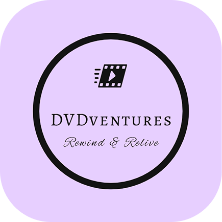

DVDventures
Rewind & Relive
Jaunākās filmas pieejamas mūsu katalogā! Esam papildinājuši mūsu kolekciju ar jaunākajiem kino hitu tituliem, lai jūs vienmēr būtu soli priekšā, kad meklējat kaut ko jaunu. Šeit ir daži no jaunākajiem papildinājumiem: "Straume" – Jaunākā gada kino sensācija, kas ieguvusi kritiku un skatītāju atzinību visā pasaulē. "Mūzikas skaņas" – Klasiskas filma, kas radīs nostalģijas sajūtu jebkurā vecumā. "Kāpa: otrā daļa" - Oskara laureāta filma, kas saņēma apbalvojumu par labāko mūzikas izpildījumu un spj aizkustināt katru reizi. Atcerieties, ka mūsu katalogs tiek regulāri atjaunots, tāpēc vienmēr ir ko jaunu skatīties!
Jauns nomas plāns – Vairāk izvēles un ērtības! Lai nodrošinātu vēl labāku pieredzi mūsu klientiem, mēs piedāvājam jaunu, elastīgu nomas plānu! Tagad varēsiet izvēlēties, kādu nomas periodu vēlaties – no vienas dienas līdz nedēļām vai mēnešiem, tāpēc varēsiet pielāgot nomu savām vajadzībām.
Bezmaksas piegāde un atgriešana – Joprojām mūsu solījums! Pateicoties mūsu bezmaksas piegādes un atgriešanas pakalpojumiem, jūs varat ērti un bez liekām raizēm saņemt savus iecienītos titulus tieši pie durvīm. Mēs nodrošinām ātru piegādi, lai varētu maksimāli ātri uzsākt savu filmu piedzīvojumu!
Jauna mobilā lietotne – Pārlūkojiet, izvēlieties un nomājiet uz vietas! Lai vēl vairāk uzlabotu klientu pieredzi, mēs esam izstrādājuši jaunu mobilās lietotnes versiju. Tagad varēsiet pārlūkot mūsu katalogu, veikt nomas un pārvaldīt savas rezervācijas tieši no viedtālruņa – jebkurā laikā un vietā!
Jaunas ērtības nomai! Lai padarītu jūsu filmu nomu ērtāku, esam ieviesuši dažas jaunas funkcijas: Pagarinātas nomas iespējas: Mēs piedāvājam elastīgākas nomas iespējas ar pagarinātiem termiņiem, lai jūs varētu pilnībā izbaudīt filmas bez steigas. Veikalā pieejami papildu aksesuāri: Papildus DVD diskam tagad varat iegādāties arī filmas plēves vāciņus, īpašus filmas dāvanu komplektus un citas interesantas lietas.